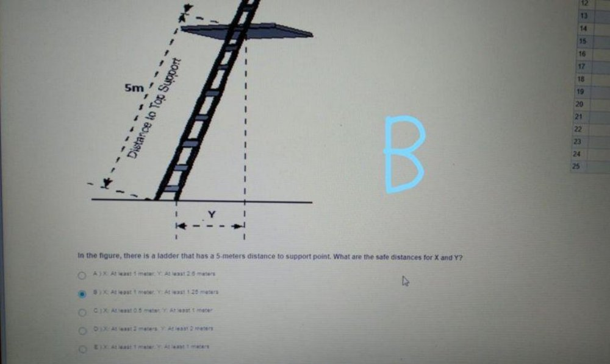
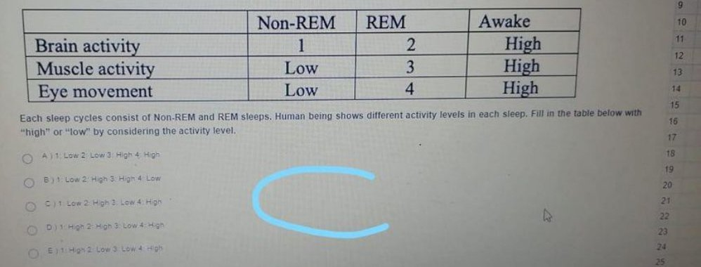
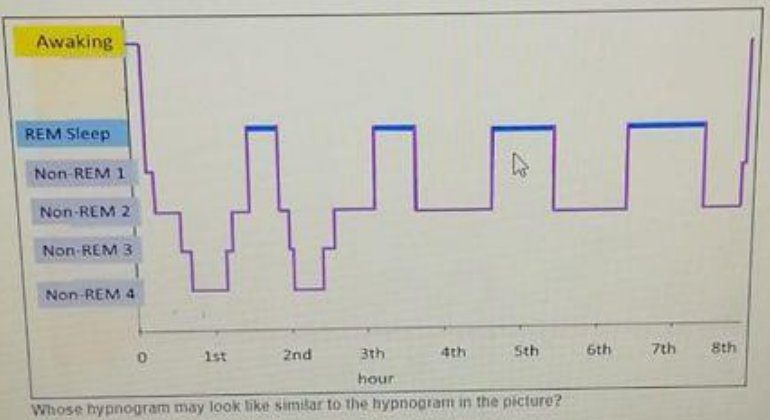
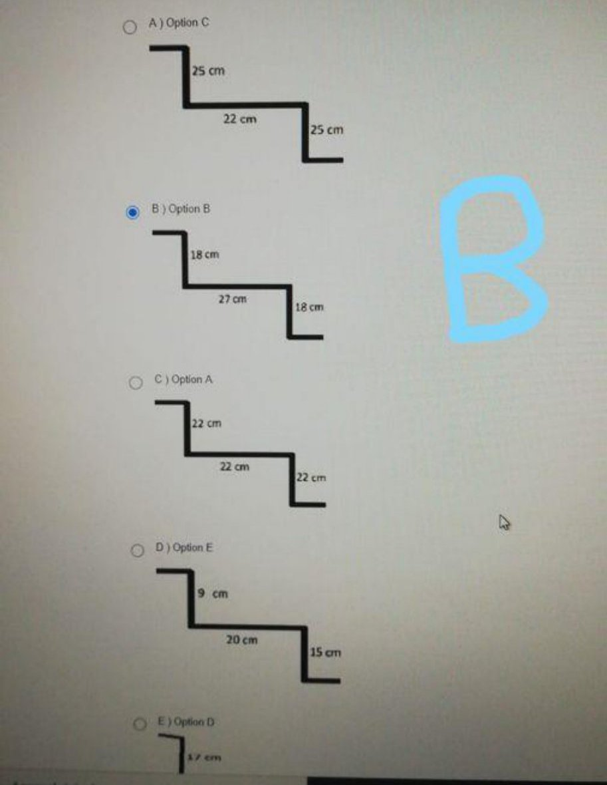

Kaynak: İSG2 SORULAR (2).pdf içindeki mavi el yazısı harfli ve examid=3099 görünen ekranlar. Tarih yalnızca bir ekranın görev çubuğu saatinden (24.08.2020) çıkarıldı; kesin sınav tarihi değildir.
Mavi harf öğrencinin işaretini/kontrol notunu gösterir; ekranda radyo seçimi okunabiliyorsa ayrıca teyit edildi. Mavi harf "marked" olarak alındı, answerSource "key" mavi harf notunu ifade eder.
Kırmızı işaretli seri (examid=2136) ile aynı sorular karışık şık sırasıyla tekrar ediyor; 2136 soruları ayrı dosyada.
Bir şıkkı işaretlediğinizde doğru cevap görünür. Seçiminiz bu tarayıcıda saklanır.
0 / 24 cevaplandı
1. Which of the following causes slipping?
Doğru cevap: B · Kâğıtta/ekranda işaretli cevap · Mavi el yazısı 'B'; ekranda B radyosu seçili. Mavi el yazısı harf serisi (ekranda examid=3099 bazı fotoğraflarda görünüyor; aynı seri 3099 kabul edildi).
2. Which of the following is a true statement?
Doğru cevap: C · İşaretli cevapla çelişiyor, gözden geçirin · kâğıtta E işaretli · 1. soru, ekranda examid=3099 görünüyor. Mavi el yazısı 'E' (ekranda radyo seçimi okunmuyor). Flow modelinde düşük beceri + yüksek zorluk kaygıyı (anxiety) doğurur, apati düşük beceri + düşük zorluktur; yorgunlukta titreme (flicker) fark etme frekansı düşer. Bu yüzden E yanlış, C doğru görünüyor.
3. If you use a plastic shield to eliminate radiation exposure, which type of radiation can be stopped?
Doğru cevap: C · Kâğıtta/ekranda işaretli cevap · 2. soru, 4 puan. Ekranda C radyosu seçili, mavi el yazısı 'C'. Plastik kalkan alfa (ve beta) parçacıklarını durdurur.
4. Which of the following hazard analysis technique requires a brainstorming session?
Doğru cevap: D · Öğrenci cevap listesine göre · 22. soru. Mavi el yazısı 'D' (ekranda radyo seçimi okunmuyor). PHL beyin fırtınası oturumuyla hazırlanır.
5. Which of the following is not a good suggestion for a good working posture while we are working with a desktop computer at offices?
Doğru cevap: E · Kâğıtta/ekranda işaretli cevap · 1. soru, 4 puan. Ekranda E radyosu seçili ve metin vurgulanmış; mavi 'E'. Sağdaki Cevap Listesi kullanılmadı.
6. Which of the following is not a minimal cut set for the calculation of the probability of all three alarms fail to ring?
Doğru cevap: E · Öğrenci cevap listesine göre · emin değiliz · Sorunun hata ağacı (fault tree) şekli kaynaklarda yok; cevap öğrencinin cevap listesindeki E. Şekil olmadan doğrulanamadı.
7. Which of the following is a control measure to prevent slipping at the workplace?
Doğru cevap: B · Kâğıtta/ekranda işaretli cevap · 18. soru. Ekranda B radyosu seçili, mavi 'B'.
8. Which of the following is not one of the solutions for shift work problems?
Doğru cevap: D · Kâğıtta/ekranda işaretli cevap · 20. soru. Ekranda D radyosu seçili, mavi 'D'.
9. Which hazard analysis technique compares/couples systems parameters and guide words to find any deiaviton from the intended design?
Doğru cevap: C · Kâğıtta/ekranda işaretli cevap · 24. soru, 4 puan. Ekranda C radyosu seçili, mavi 'C'. 'deiaviton' yazım hatası ekranda böyle.
10. What is the unit for slipperiness?
Doğru cevap: B · Kâğıtta/ekranda işaretli cevap · 21. soru. Ekranda B radyosu seçili, mavi 'B'; examid=3099 görünüyor. Kayganlık (sürtünme katsayısı) birimsizdir.
11. Which of the following causes the circadian rhythm to desynchronize?
Doğru cevap: B · Kâğıtta/ekranda işaretli cevap · 20. soru, 4 puan; ekranda B (All of them) radyosu seçili, mavi 'B'.
12. We discussed the results of research analyzing oxygen deficiency fatalities for the 10 years. Which of the following is not a result of the research?
Doğru cevap: C · Öğrenci cevap listesine göre · 10. soru, 4 puan. Mavi el yazısı 'C' (ekranda radyo seçimi okunmuyor). Aynı soru başka bir ekranda farklı şık sırasıyla (3. soru) da var; orada da C (not authorized) işaretli/seçili görünüyor.
13. Which of the following is an example of a control of electrical hazards?
Doğru cevap: E · Öğrenci cevap listesine göre · 13. soru, ekranda examid=3099 görünüyor. Mavi el yazısı 'E'.
14. In the figure, there is a ladder that has a 5-meters distance to support point. What are the safe distances for X and Y?

Doğru cevap: B · Kâğıtta/ekranda işaretli cevap · Ekranda B radyosu seçili, mavi 'B'. Şekil: X = destek noktası üstünde taşan merdiven boyu (en az 1 m), Y = taban uzaklığı (5 m / 4 = 1.25 m).
15. Which of the following is a proper way to use ladders?
Doğru cevap: C · Öğrenci cevap listesine göre · 11. soru, ekranda examid=3099 görünüyor. Mavi el yazısı 'C'.
16. Which of the following is an example of non-ionizing radiation?
Doğru cevap: C · Öğrenci cevap listesine göre · 8. soru. Mavi el yazısı 'C' (ekranda radyo seçimi okunmuyor).
17. Which of the following is not one of the humans factors that lead to slip, trip, and fall?
Doğru cevap: E · Kâğıtta/ekranda işaretli cevap · 7. soru. Ekranda E radyosu seçili, mavi 'E'.
18. Based on the given probabilities in the diagram, what is the probability of "employees may die due to a fire?" Note that employees may die either when the fire detection does not work or when the fire detection works but both the fire alarm and fire sprinkler system do not work at the same time.
Doğru cevap: C · Öğrenci cevap listesine göre · Olay ağacı: Fire Starts (P=0.01); detektör çalışır 0.9 / çalışmaz 0.1; alarm çalışır 0.7 / çalışmaz 0.3; sprinkler çalışır 0.8 / çalışmaz 0.2. P = 0.01 × [0.1 + 0.9 × (0.3 × 0.2)] = 0.01 × 0.154 = 0.00154. Mavi el yazısı 'C' (bu ekranda şık sırası: C 0.00154). Ekranda examid=3099 görünüyor.
19. Each sleep cycles consist of Non-REM and REM sleeps. Human being shows different activity levels in each sleep. Fill in the table below with "high" or "low" by considering the activity level.

Doğru cevap: C · Öğrenci cevap listesine göre · 9. soru, 4 puan. Mavi el yazısı 'C'. REM'de beyin aktivitesi yüksek (2), kas aktivitesi düşük/atoni (3), göz hareketi yüksek (4); Non-REM'de beyin aktivitesi düşük (1).
20. Which of the following is not a good suggestion for ladders?
Doğru cevap: D · İşaretli cevapla çelişiyor, gözden geçirin · kâğıtta B işaretli · 8. soru, 4 puan. Ekranda B radyosu seçili ve metin vurgulanmış; mavi el yazısı 'B' (iki yerde). Ancak iki ayağın basamakta sağlam durması iyi bir uygulamadır; ahşap merdivenlerin boyanması ise çatlakları gizlediği için önerilmez, doğru cevap D.
21. Whose hypnogram may look like similar to the hypnogram in the picture?

Doğru cevap: B · Öğrenci cevap listesine göre · 3. soru, ekranda examid=3099 görünüyor. Mavi el yazısı 'B' (ekranda radyo seçimi okunmuyor). Şekil: 8 saatlik uyku evreleri grafiği (hipnogram), düzenli NREM/REM döngüleri.
22. Which of the following is a false statement?
Doğru cevap: E · Kâğıtta/ekranda işaretli cevap · 5. soru, ekranda examid=3099 görünüyor. Ekranda E radyosu seçili, mavi 'E'. Mammoth Cave deneyi insan vücudunun 24 saat dışı döngüye uyum sağlayamadığını göstermiştir.
23. Which stair design complies with the comfortable rise/tread rule (2 x riser + tread = 60-64 cm)?

Doğru cevap: B · Öğrenci cevap listesine göre · emin değiliz · Soru gövdesi ekran görüntülerinde yok (yalnız şıklar/şekiller görünüyor, examid=3099); metin tahmini değil, şıklardan ve 'Size of rise and tread' slaytından (2 x yükseklik + basamak derinliği = 60-64 cm) çıkarıldı. Mavi 'B' ve ekranda B radyosu seçili: 2x18+27 = 63 cm. Soru metni okunamadı.
24. Is the Preliminary Hazard Analysis (PHA) is superior to the Failure Mode and Effects Analysis (FMEA)?
Doğru cevap: D · Öğrenci cevap listesine göre · 4. soru. Mavi el yazısı 'D' ve D şıkkını gösteren ok. Metindeki yazım hataları ('propability', 'Priorty') ekrandaki gibi.